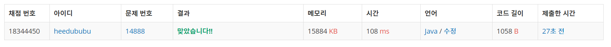

👀 문제
https://www.acmicpc.net/problem/14888
👊 도전
풀이 방법 1
1. 설계
- 배열을 이용하여 숫자와 연산자의 갯수를 저장한다.
- DFS를 이용하여 모든 경우의 수의 합을 구한다.
- 이중 최댓값과 최솟값을 리턴한다.
2. 구현 (성공 코드)
import java.util.Scanner;
/**
*
* @author HEESOO
*
*/
public class Main {
static int[] number;
static int[] operator;
static int min=Integer.MAX_VALUE;
static int max=Integer.MIN_VALUE;
public static void dfs(int idx, int sum){
if(idx==number.length){
if(min>sum) min=sum;
if(max<sum) max=sum;
return;
}
if(operator[0]>0){
operator[0]--;
dfs(idx+1, sum+number[idx]);
operator[0]++;
}
if(operator[1]>0){
operator[1]--;
dfs(idx+1, sum-number[idx]);
operator[1]++;
}
if(operator[2]>0){
operator[2]--;
dfs(idx+1, sum*number[idx]);
operator[2]++;
}
if(operator[3]>0){
operator[3]--;
dfs(idx+1, sum/number[idx]);
operator[3]++;
}
}
public static void main(String[] args){
Scanner input=new Scanner(System.in);
int n=input.nextInt();
number=new int[n];
operator=new int[4];
for(int i=0;i<n;i++){
number[i]=input.nextInt();
}
for(int i=0;i<4;i++){
operator[i]=input.nextInt();
}
dfs(1, number[0]);
System.out.println(max);
System.out.println(min);
}
}
3. 결과
 🤟 성공 🤟
4. 설명
- DFS를 이용한다.
- 연산자를 사용할 수 있다면 operator–하고 해당 연산자에 대한 결과값을 파라미터로 넘겨 다시 dfs()를 재귀호출한다.
- 이때 결과값과 함께 다음 사용할 숫자 인덱스 번호도 같이 넘겨준다.
- 하나의 식이 완성된다면 그 결과값이 max, min 조건에 만족하는지 확인한다.
- 계산이 끝나 return되어 다시 재귀를 호출한 곳으로 복귀된 다음에는, 해당 연산자를 다음 식에서도 사용할 수 있게 하기 위해 연산자 갯수를 원상복구시킨다.
👏 해결 완료!
참고
- 백준 14888 연산자 끼워넣기 Java https://dundung.tistory.com/106